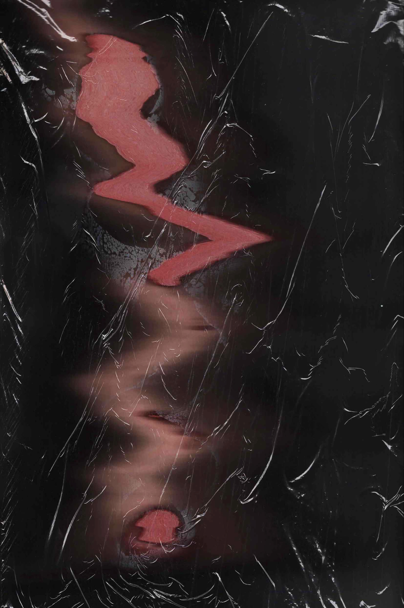
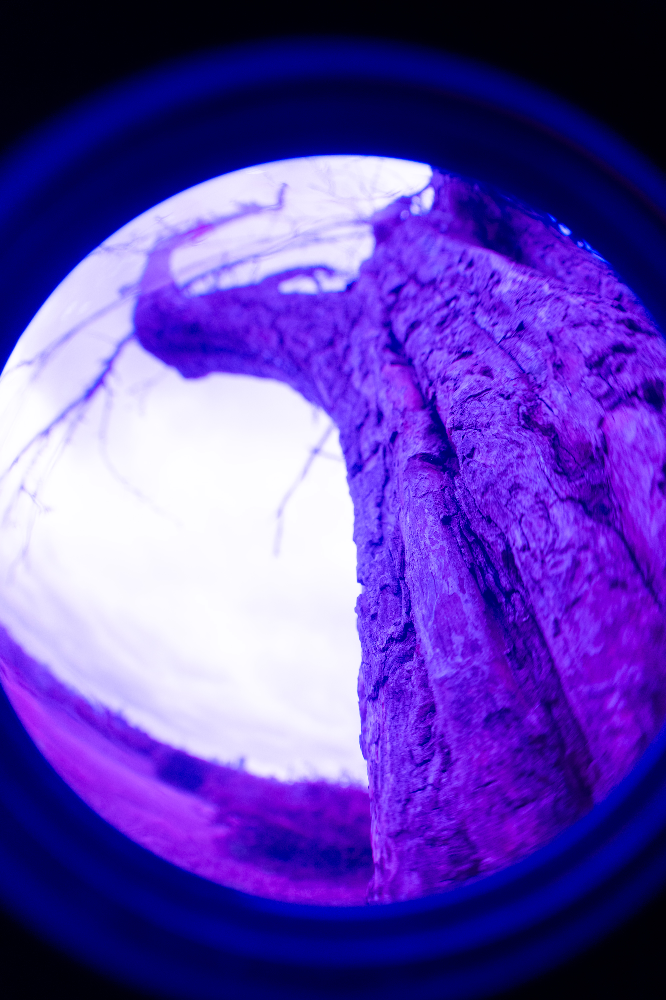

The Zoology ist ein Editorial Design welches im Januar 2025 entstand.




Hier fehlt ein Text: Durch Paris laufen Passanten, die ihre Umgebung kaum wahrnehmen. Mit Kopfhörern in den Ohren werden die Strassen zu einem monotonen Gleichklang. Dabei übersehen sie, dass die Stadt selbst zu singen scheint.
Im Layout werden Schaufenster in ihre Einzelteile zerlegt und neu angeordnet. Die einzelnen Fenster, Türen und Fassaden fügen sich über die Seiten zu einer Partitur zusammen. Das Buch fordert den Betrachter auf, seine Umgebung bewusster wahrzunehmen und die Stadt nicht nur als Kulisse zu sehen, sondern als Ort des Zusammenkommens und gemeinsamen Erleben.